Merak
Bir şeyi anlamadan kullanmak çoğu zaman bana yetmiyor. “Neden?” sorusu genellikle yolculuğun başlangıcı oluyor.
KİŞİSEL ALAN
ERSİN ÖZBUÇAK
Bir şeylerin nasıl çalıştığını anlamayı seviyorum.
Teknolojiyle çalışan bir IT profesyoneliyim. Sistemler, altyapı, açık kaynak, homelab ve yeni fikirleri denemek hayatımın önemli bir parçası.
ŞU ANDA
BEN KİMİM?
Memur bir babanın ve ev hanımı bir annenin beşinci ve tek erkek çocuğuyum. Belki de bu yüzden biraz nazlı büyütülmüş olabilirim.
Kendimi tanımlarken ilk sıralarda Beşiktaşlılığım gelir. Beşiktaşlı olmayı yalnızca tuttuğum takım olarak değil, kendime göre bir değerler bütünü olarak görüyorum.
Yaklaşık beş yıldır evliyim ve üç yaşında bir erkek çocuğunun babasıyım. İş hayatımı ve özel hayatımı mümkün olduğunca dengede ve ayrı tutmaya çalışıyorum.
Boş zamanlarımda ise genellikle teknolojiyle uğraşıyorum. Bir şeyin nasıl çalıştığını merak ettiğimde kurcalamayı, denemeyi ve mümkünse kendim kurmayı seviyorum.
BENİ BEN YAPAN
Bir şeyi anlamadan kullanmak çoğu zaman bana yetmiyor. “Neden?” sorusu genellikle yolculuğun başlangıcı oluyor.
Kariyerimin büyük bölümünde gerçek sistemlerin başında, usta-çırak ilişkisiyle, deneyerek ve hata yaparak öğrendim.
Bir teknolojiyi öğrenmenin benim için en iyi yolu hâlâ aynı: kurmak, denemek, bozmak ve yeniden yapmak.
02
FOSS-first yaklaşımıyla, mütevazı donanım üzerinde kurumsal IT altyapısının farklı parçalarını bir araya getiren referans mimarisi.
03
Fikirleri hızlıca denediğim, AI destekli geliştirme süreçlerini keşfettiğim ve bazen sadece “acaba olur mu?” diyerek başladığım projeler.
Türkiye için ev bütçesi takip sistemi.
finans.ozbucak.com.tr ↗02 · WEB APPHalı saha istatistik ve oyuncu takip platformu.
halisaha.ozbucak.com.tr ↗03 · GAMEFilm ve aktörler arasındaki bağlantıları bulmaya dayalı bulmaca oyunu.
cinelink.ozbucak.com.tr ↗04 · EDUCATIONSubnetting öğrenmeyi oyunlaştıran eğitim aracı.
subnet.ozbucak.com.tr ↗05 · GAMEd20 yaklaşımıyla futbol taktik ve strateji oyunu.
kafadantaktik.ozbucak.com.tr ↗06 · EDUCATIONÇocuklar için eğitici oyunlar ve harf/sayı yazma portalı.
minikakademi.ozbucak.com.tr ↗07 · E-COMMERCEEl yapımı örgü ve çanta tasarımları için web sitesi.
cihan.ozbucak.com.tr ↗04
Sertifikalarımı, tamamladığım eğitimleri ve öğrenme yolculuğumu görsel olarak sergileyeceğim alan.
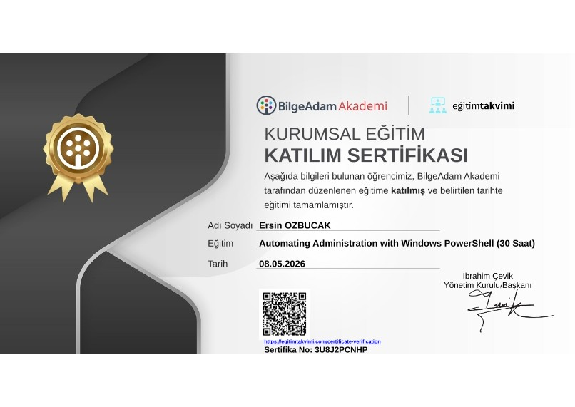
BilgeAdam · 08.05.2026
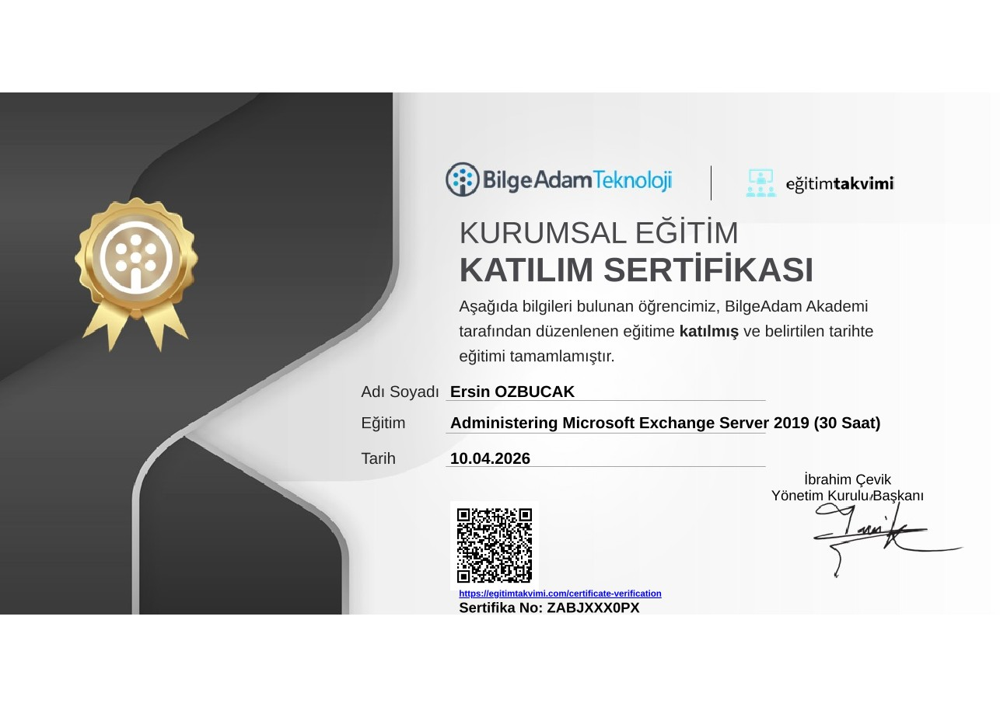
BilgeAdam · 10.04.2026
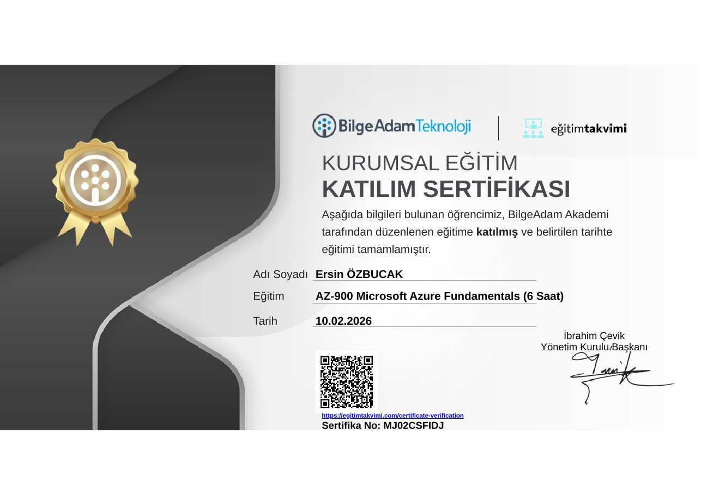
BilgeAdam · 10.02.2026
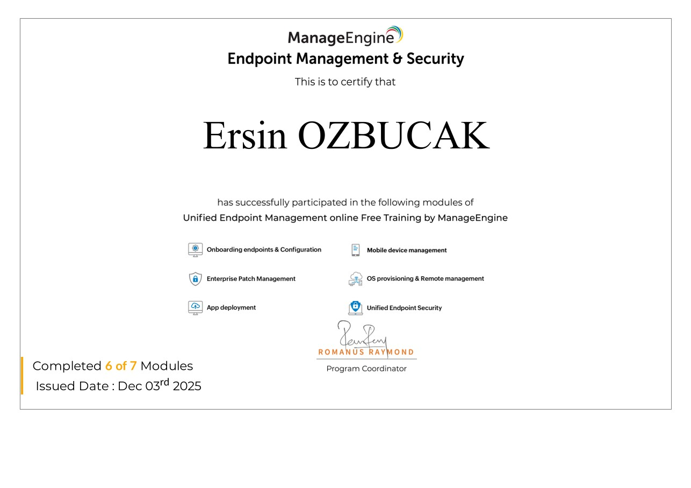
ManageEngine · 03.12.2025
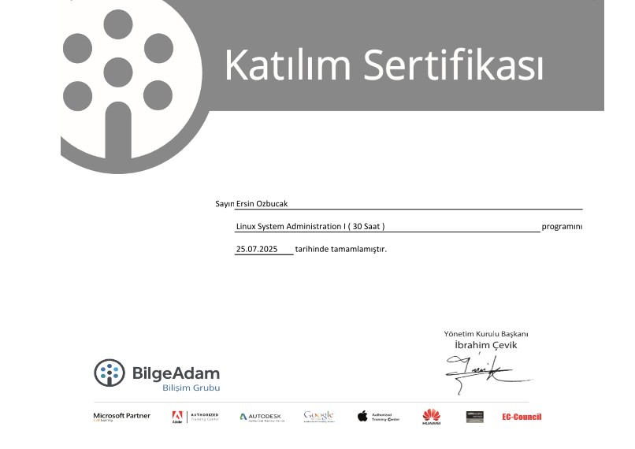
BilgeAdam · 25.07.2025
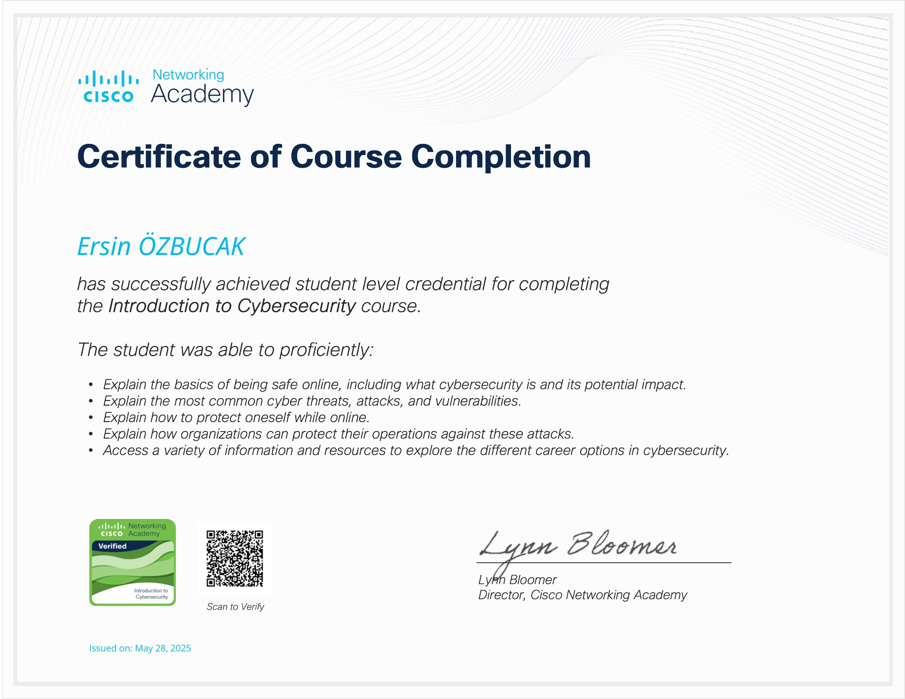
Cisco Networking Academy · 28.05.2025
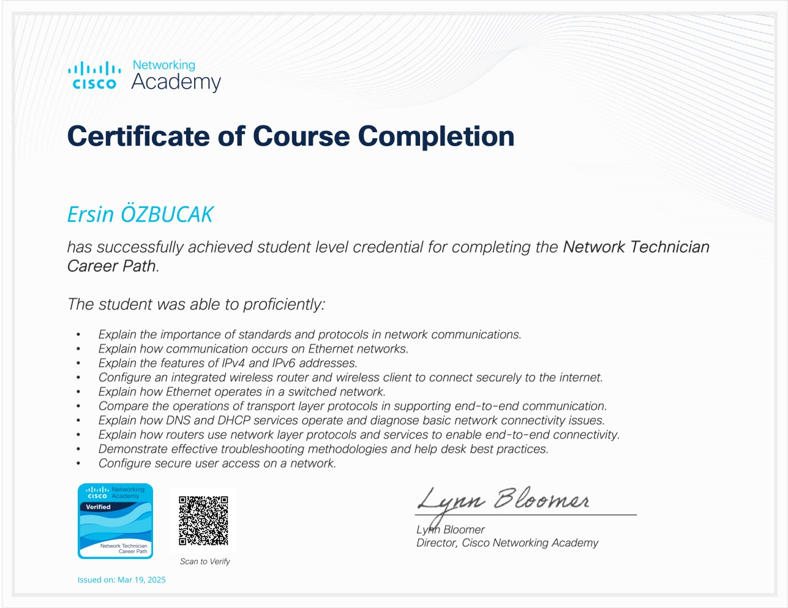
Cisco Networking Academy · 19.03.2025
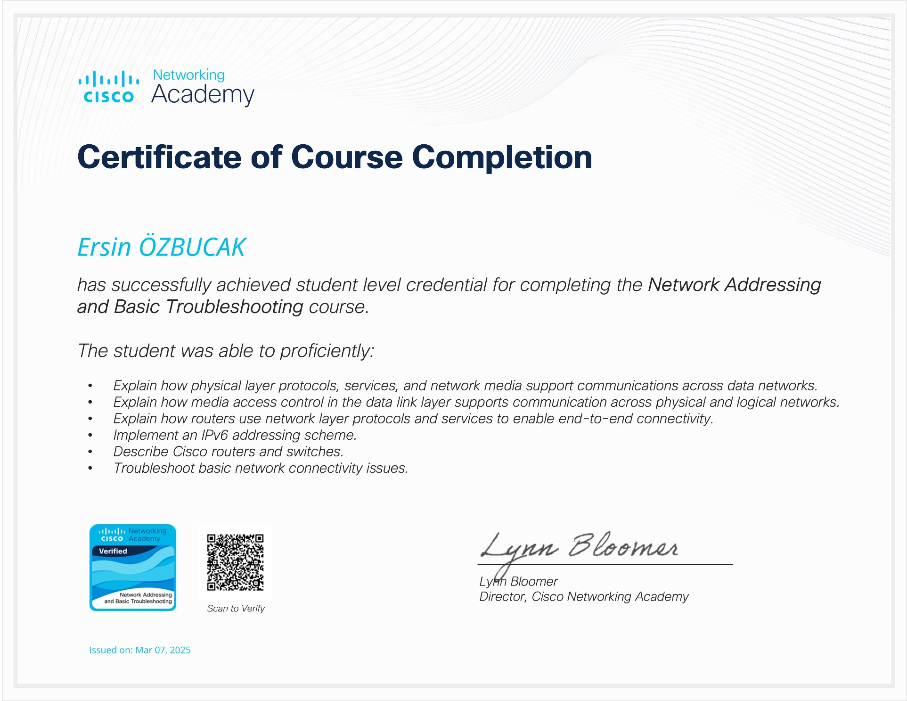
Cisco Networking Academy · 07.03.2025
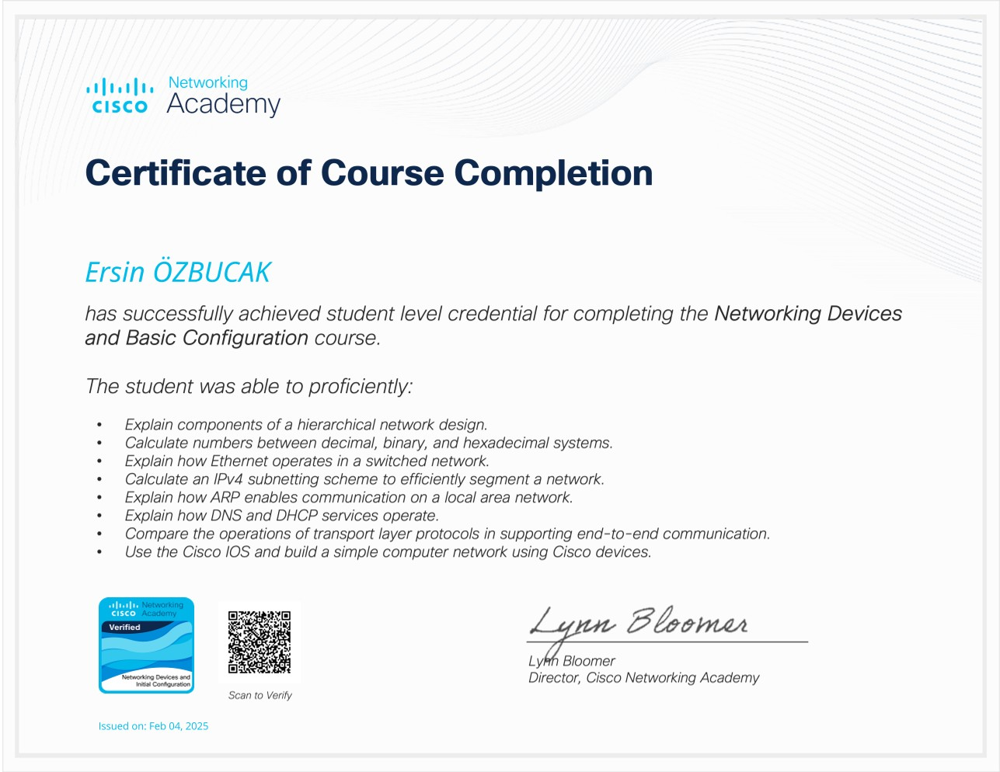
Cisco Networking Academy · 04.02.2025
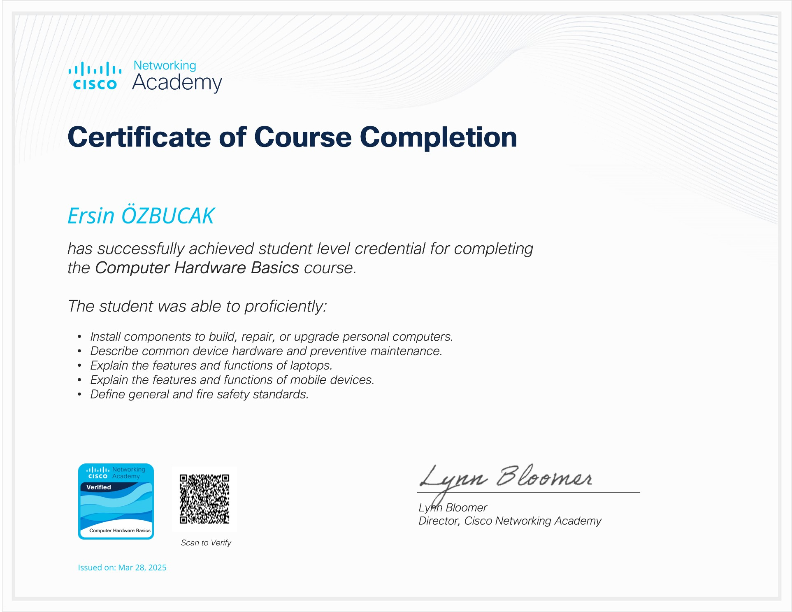
Cisco Networking Academy · 28.03.2025
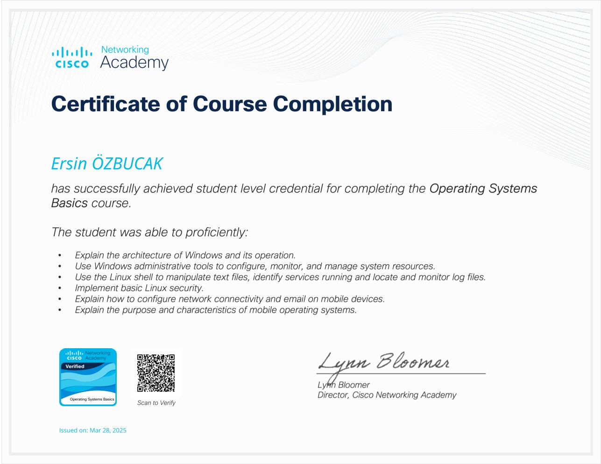
Cisco Networking Academy · 28.03.2025
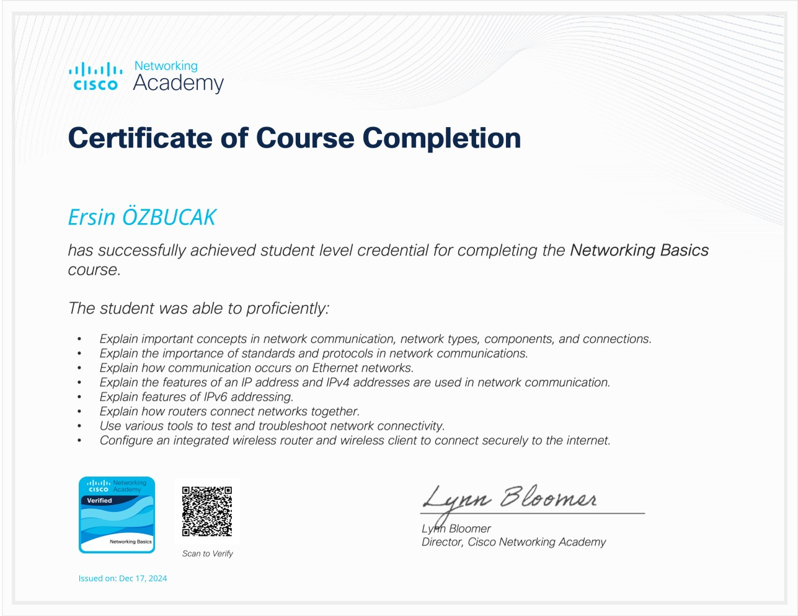
Cisco Networking Academy · 17.12.2024
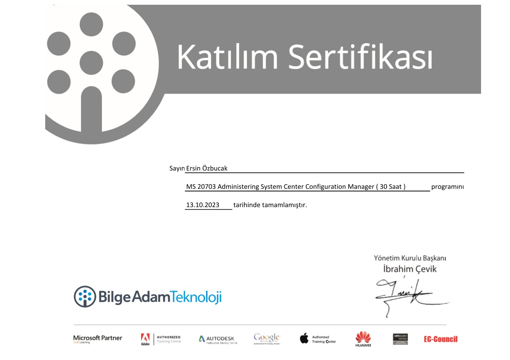
BilgeAdam · 13.10.2023
05
IT Systems & Infrastructure Specialist olarak 15+ yıllık deneyimim boyunca sistem yönetimi, IT operasyonları, teknik destek, endpoint yönetimi, Citrix VDI ve network operasyonlarında görev aldım. Kariyerimi gerçek sistemler üzerinde çalışarak ve sürekli eğitimle geliştirdim. Bugün odağımı Linux, açık kaynak altyapılar, sanallaştırma, otomasyon, cloud ve AI Infrastructure yönüne genişletiyorum.
CURRICULUM VITAE
Deneyim, teknik yetkinlikler, eğitimler ve kişisel projelerimin daha detaylı özeti.
06
{kind=link}
{kind=link}
{kind=link}
{kind=link}
{kind=link}
{kind=link}
{kind=link}
{kind=link}
{kind=link}
{kind=link}
{kind=link}
{kind=link}
{kind=link}